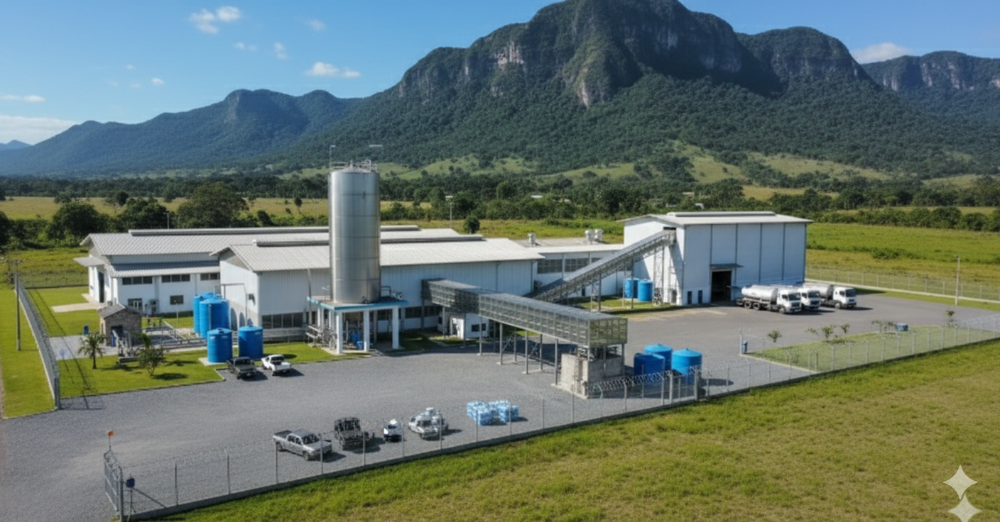

Conheça Mais Nossa Empressa
Na Mineradora Paulista, acreditamos que a água é sinônimo de vida e bem-estar. Por isso, trabalhamos com dedicação para levar até você a pureza e a qualidade de uma água mineral naturalmente saudável. Nossa água é extraída de fontes cuidadosamente preservadas, livres de poluição, o que garante um frescor único e propriedades minerais que contribuem para a saúde no dia a dia.

Além de prezarmos pela responsabilidade ambiental em todo o processo de captação e distribuição, oferecemos soluções práticas para famílias, empresas e estabelecimentos comerciais. Contamos com tonéis de diferentes capacidades, ideais para atender desde o consumo doméstico até grandes demandas, sempre com a mesma qualidade e confiança que marcam a nossa marca.
Cada tonel é armazenado e transportado seguindo rigorosos padrões de higiene e segurança, para que você receba apenas o melhor da nossa fonte, direto para sua casa ou negócio.
 Voltar
Voltar